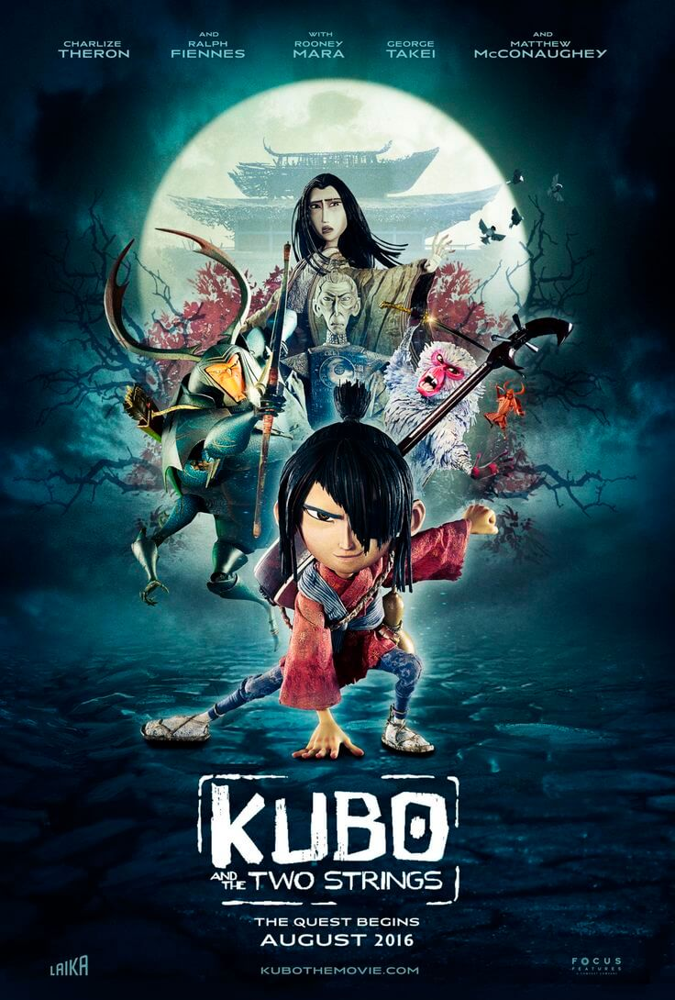
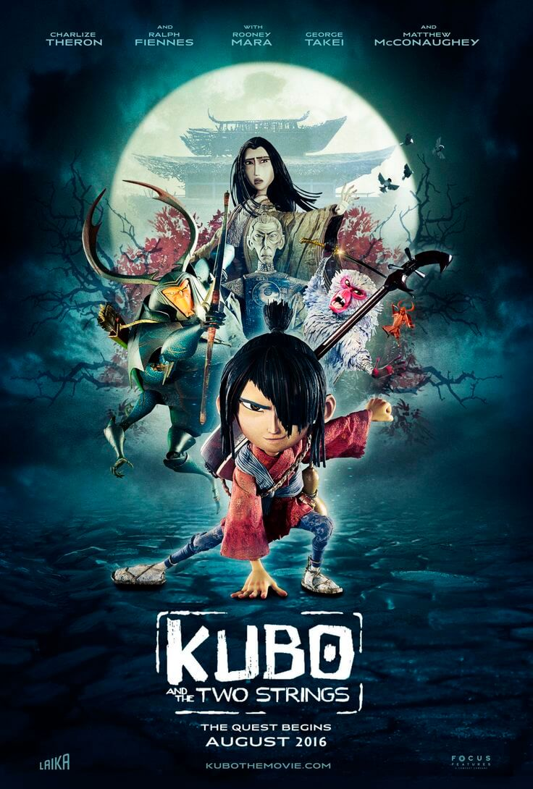

Coraline: While exploring her new home, a girl named Coraline (Dakota Fanning) discovers a secret door, behind which lies an alternate world that closely mirrors her own but, in many ways, is better. She rejoices in her discovery, until Other Mother (Teri Hatcher) and the rest of her parallel family try to keep her there forever. Coraline must use all her resources and bravery to make it back to her own family and life.

ParaNorman:Young Norman Babcock (Kodi Smit-McPhee) has the ability to speak with the dead -- and he often prefers their company to that of the living. Norman receives word from his strange Uncle Prenderghast (John Goodman) that a centuries-old witch's curse on their town is real and about to come true -- and that only Norman can stop it. When zombies rise from their graves, Norman must summon all his courage and compassion and push his paranormal abilities to the limit to save his fellow townspeople.

Kubo And The Two Strings: Young Kubo's (Art Parkinson) peaceful existence comes crashing down when he accidentally summons a vengeful spirit from the past. Now on the run, Kubo joins forces with Monkey (Charlize Theron) and Beetle (Matthew McConaughey) to unlock a secret legacy. Armed with a magical instrument, Kubo must battle the Moon King (Ralph Fiennes) and other gods and monsters to save his family and solve the mystery of his fallen father, the greatest samurai warrior the world has ever known.